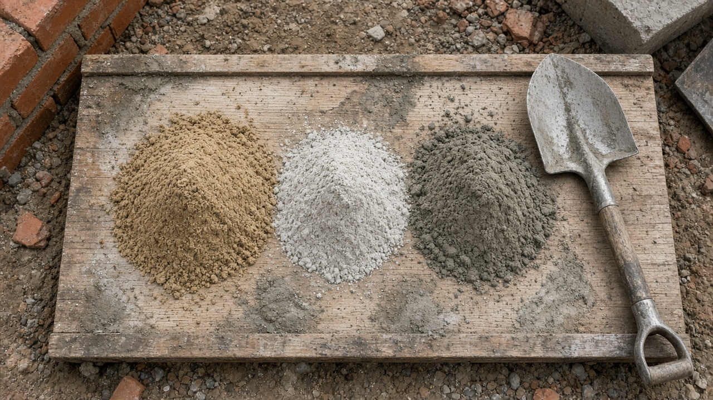

Mortar Smash › How to mix mortar
Short answer
Gauge binders and sand by volume with a consistent box, dry-blend first, then add water until the mix is plastic on the trowel. A common general brickwork mix is 1:1:5–6 cement:lime:sand (or 1:4 cement:sand with plasticiser). Mix only what you will use in about an hour, and never retemper a cement batch that has begun to set.

Common volume ratios
| Mix (cement : lime : sand) | Typical use |
|---|---|
| 1 : 0 : 3 | Strong cement:sand for dense engineering brick / some paving (harsh; often needs plasticiser) |
| 1 : ½ : 4½ | Richer cement-lime for higher-strength brickwork |
| 1 : 1 : 5–6 | General above-grade brickwork (Type N style) |
| 1 : 2 : 8–9 | Weaker lime-rich mix for softer brick (approach Type O territory) |
US bagged mortars labelled Type N, S or M already encode a proportion or property target — read the bag rather than reinventing the ratio. For quantities of wet mortar, cement and sand from a brick count, use the mortar calculator. For which ASTM type belongs on which job, see Types N, S, M and O.
Batch practice that keeps joints even
- Use gauge boxes or buckets, not unmarked shovels, so every batch matches.
- Dry-blend cement, lime and sand until the colour is even before adding water.
- Add water in stages. Stop when the mortar slices cleanly and holds a ridge on the trowel.
- Account for damp sand. Wet sand bulks and already carries water; reduce gauged water and do not over-sand by volume without checking.
- Board discipline. Turn the heap, keep a clean spot for buttering, and discard cement mixes that have gone hard rather than drowning them.
Weather and curing
Hot wind sucks water out of fresh joints; cover and damp-cure as the spec requires. Near-freezing weather slows cement hydration and can ruin lime work if ice forms in the joint. Do not lay on frozen or waterlogged bricks. Protection for the first days matters as much as the ratio on the board.
Mixing FAQ
What is a good general mortar mix ratio?
A widely used general-purpose mix is 1 part cement : 1 part lime : 5–6 parts soft building sand by volume (roughly ASTM Type N territory), or 1:4 cement:sand when lime is omitted and plasticity comes from a plasticiser. Richer 1:3 cement:sand suits engineering brick and some below-grade work; leaner 1:5–1:6 suits softer brick. Always prefer the project spec when one exists.
How much water do I add?
Add water gradually until the mortar is plastic and hangs on the trowel without running. Too wet weakens the set and stains the face; too dry gives poor bond and hard work. Gauge water by feel against a known good batch, not by a fixed litres-per-bag rule that ignores sand moisture.
Should I mix by weight or by volume?
Site practice is almost always by volume (gauge boxes or marked buckets). Lab ASTM property specs use controlled weights and moisture. Keep every gauge the same size; ‘shovelfuls’ drift rich or lean across a day and show up as colour and strength bands in the wall.
How long can I use a batch after mixing?
Cement and cement-lime mortars begin to stiffen within about one to two hours depending on temperature. Do not retemper with extra water after the cement has started to set — discard and mix fresh. Lime putty mixes stay workable longer but still need protection and proper curing.
Can I mix mortar in a wheelbarrow?
Yes for small jobs: dry-blend the binders and sand first, pull a crater, add water, and turn until even. A paddle mixer or drum mixer is cleaner for larger runs. Mix enough for about an hour’s laying so the board stays fresh.
Why does my mortar crack or go dusty?
Common causes: too much water, too much cement for a soft brick, mixing on contaminated ground, letting the bed dry out in wind or sun, or working on saturated frozen units. Keep sand clean, gauge consistent, and protect fresh work.
Last updated 5 November 2026. General site practice only; follow the project specification and local code where they differ.